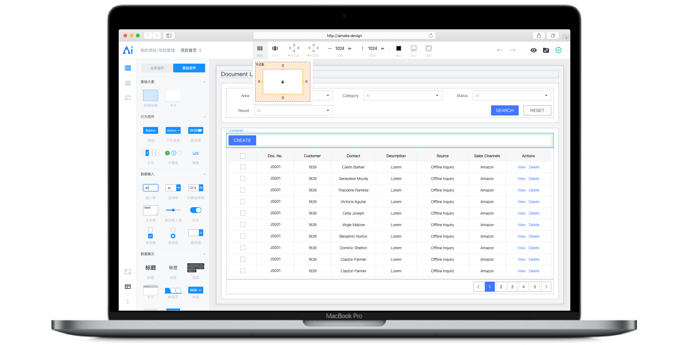
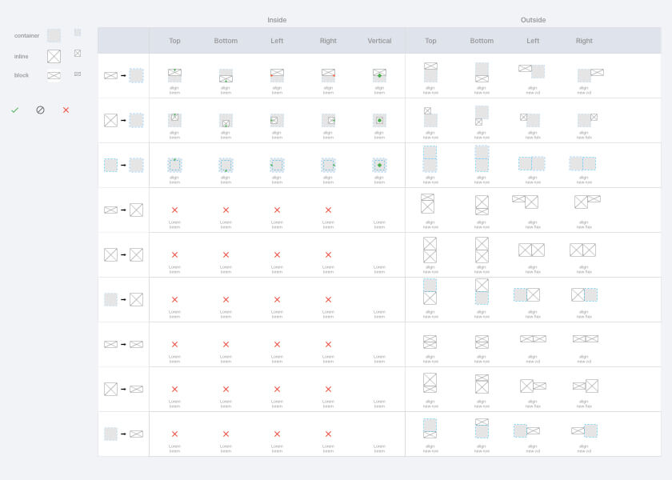

Project Intro
为B端应用研发的一款浏览器端的界面搭建工具，通过提供丰富、优质且扩展性强的前端框架库和易用界面搭建体验，帮助设计师快速且准确的将设计稿转化成前端页面，简化产品开发流程。
短期目标：希望帮助部门简化开发流程，提高团队协作效率。
长期目标：为集团各部门的设计规范提供平台支持，使各部门都可以上传规范并快速搭建页面/融合更多产品协作研发流程
My role in the team
我是AImake的产品负责人兼产品设计师，带领6名前端研发和一名后端工程师组成的作战小分队，负责在六个月时间将AImake这款产品实现从无到有并完成核心功能完整闭环的版本。

AImake的易用的关键在于让不同类型的前端元素产生碰撞和嵌套时的位置动作直接转化为布局样式
Works and Contributions
作为Product Owner定义产品功能并输出需求文档
和团队讨论功能的可实现性和优先级
作为设计师定义交互和视觉方案
和设计师团队讨论功能的易用性，提供试用、收集反馈并迅速迭代
Outcomes
AImake在上线后帮助设计师和前端工程师减少40%的页面设计和前端代码工作量。